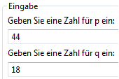
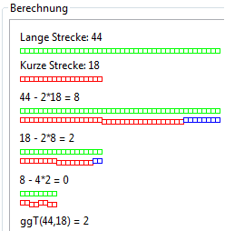
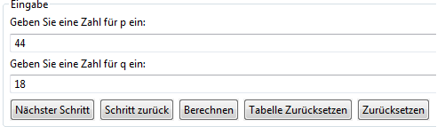
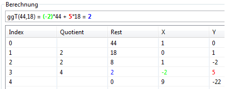
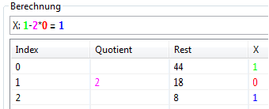
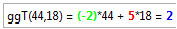

Diese Visualisierung besteht aus zwei Teilen und soll die Wechselwegnahme (Euklidischer Algorithmus) und den Erweiterten Euklidischen Algorithmus veranschaulichen.
In die Eingabefelder für p und q können zwei natürliche Zahlen eingegeben werden, deren größter gemeinsamer Teiler (ggT) ermittelt werden soll.
Danach kann man mit den 4 dargestellten Schaltflächen das Plug-in bedienen.
Darunter, im Bereich Berechnung, sieht man, je nach dem für welche Berechnungsvariante man sich entschieden hat, eine teilweise oder vollständig durchgeführte Berechnung und die Veranschaulichung. Unterhalb sieht man ein Beispiel einer vollständig durchgeführten Berechnung: (grüne Rechtecke => größere Zahl p, rote Rechtecke => kleinere Zahl q, blaue Rechtecke => Rest)
Die Bedienung der Visualisierung erfolgt wie schon bei der Wechselwegnahme: Man kann die natürlichen Zahlen p und q über die jeweiligen Eingabefelder übergeben und sich dann mit Hilfe der Schaltflächen die Berechnung der Zahlen x und y in der Tabelle im unteren Teil des Plug-ins anzeigen lassen (schrittweise / vollständig):
Unterhalb sieht man eine vollständig durchgeführte Berechnung:
Die Tabelle ist in 5 Spalten unterteilt: Index, Quotient, Rest, x und y:
In den ersten zwei Zeilen wird die Tabelle initialisiert (Rest0 = p, Rest1 = q).
Wenn man sich für die schrittweise Berechnung entschieden hat, wird der aktuelle Schritt, sowohl im Textfeld, als auch in der Tabelle selbst, farbig hervorgehoben:
Nachdem die Berechnung vollständig durchgeführt wurde, werden der ggT und die fertig berechneten x und y oberhalb der Tabelle ausgegeben: (x=>grün, y=>rot, ggT(p,q)=>blau)
Außerdem ist es nach vollständig durchgeführter Berechnung möglich, die fertige Berechnungstabelle als .tex oder .csv über das Dropdown-Menü am oberen rechten Plug-in-Rand exportieren.